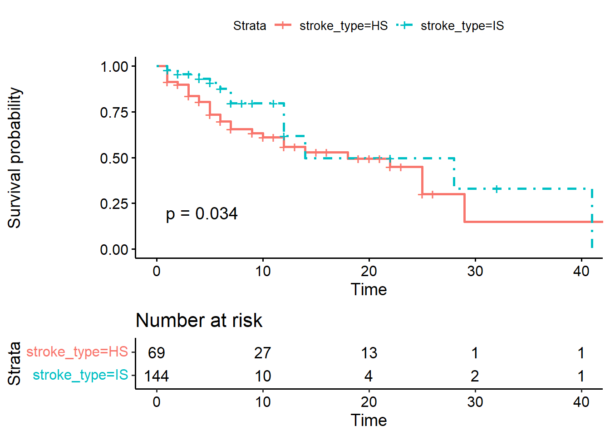
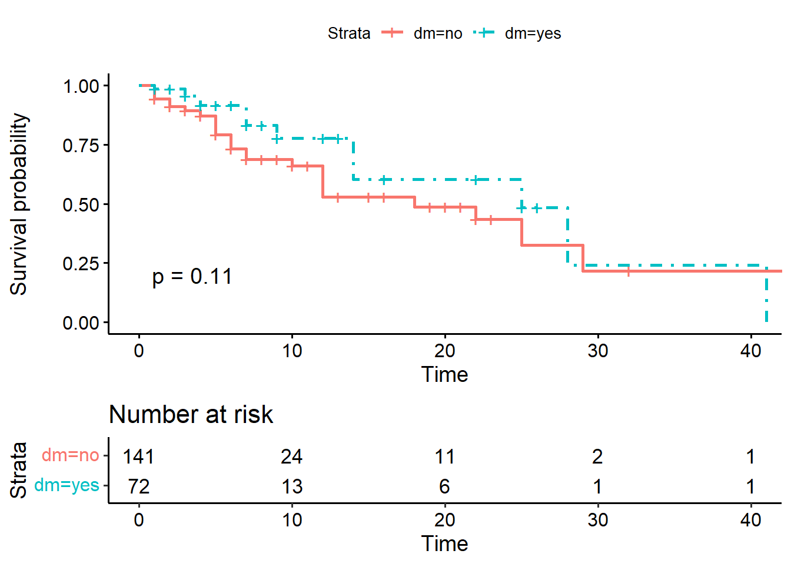
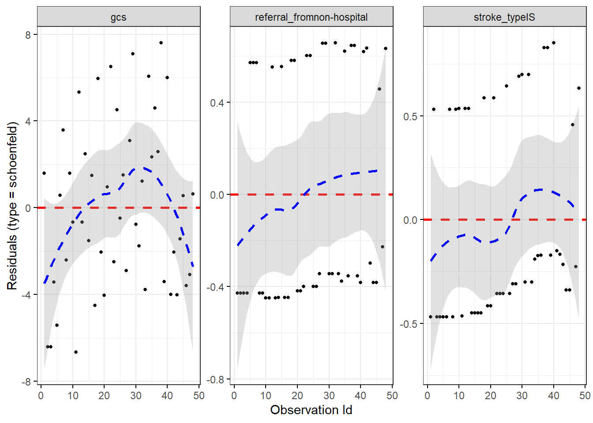
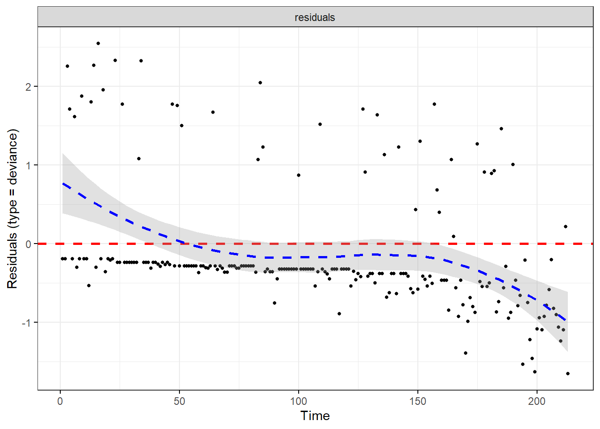
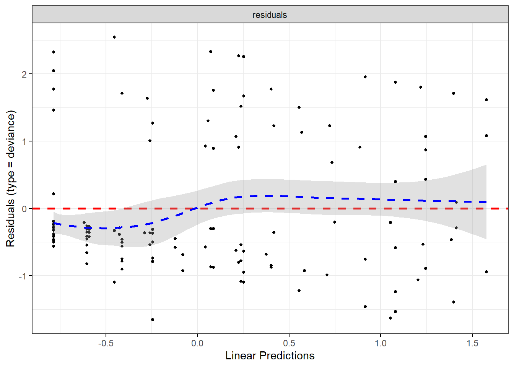
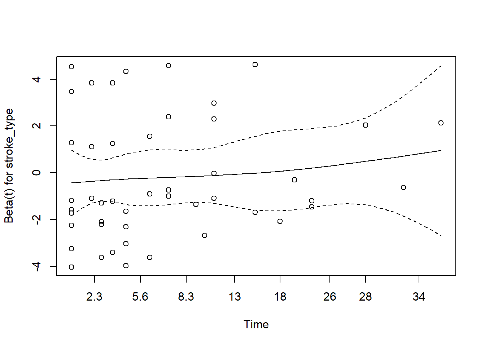
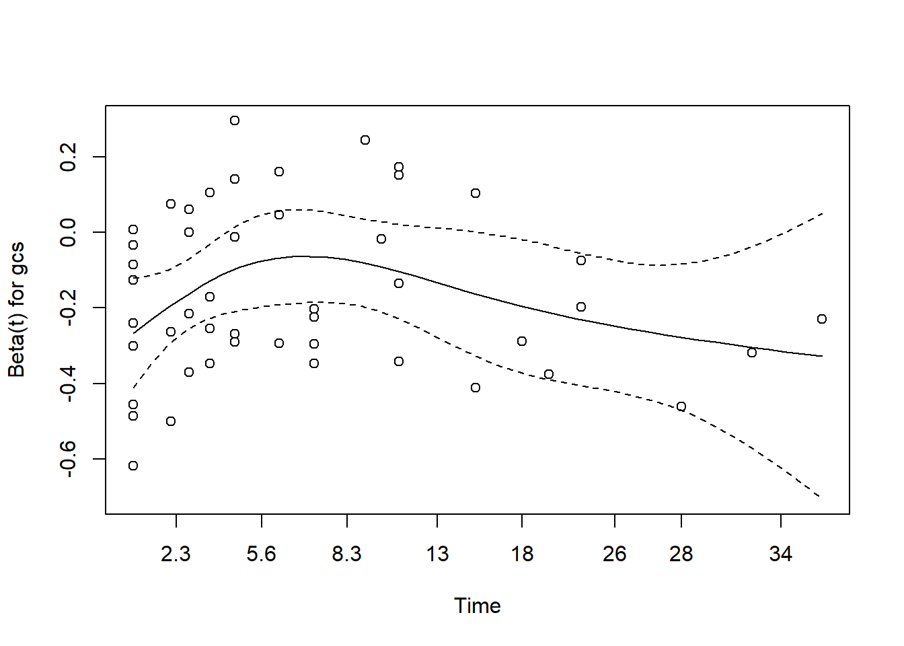
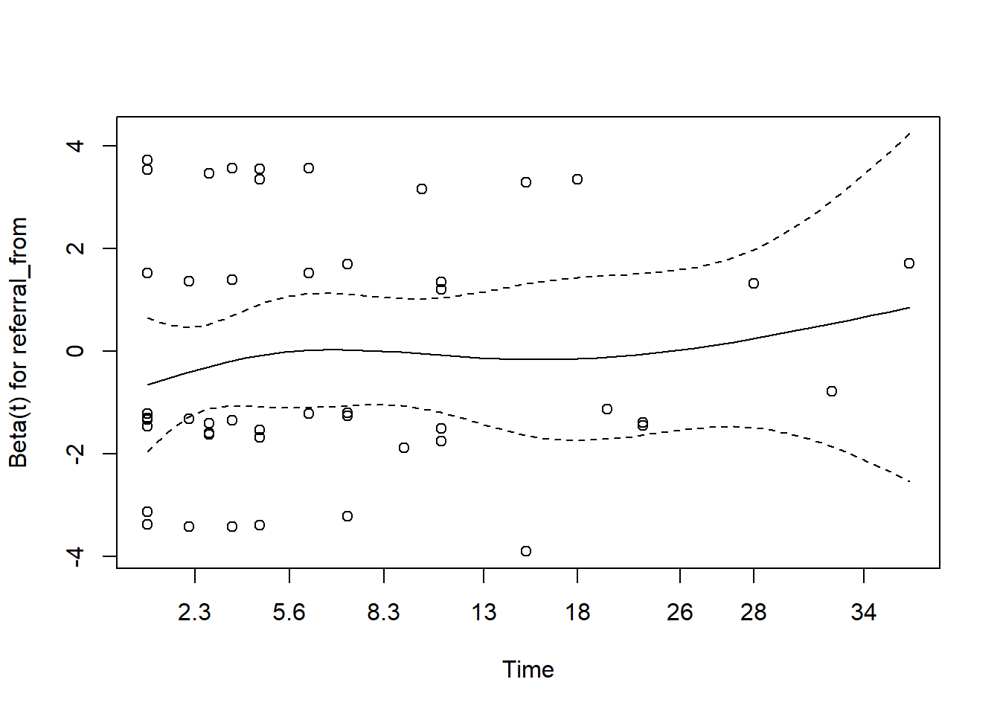
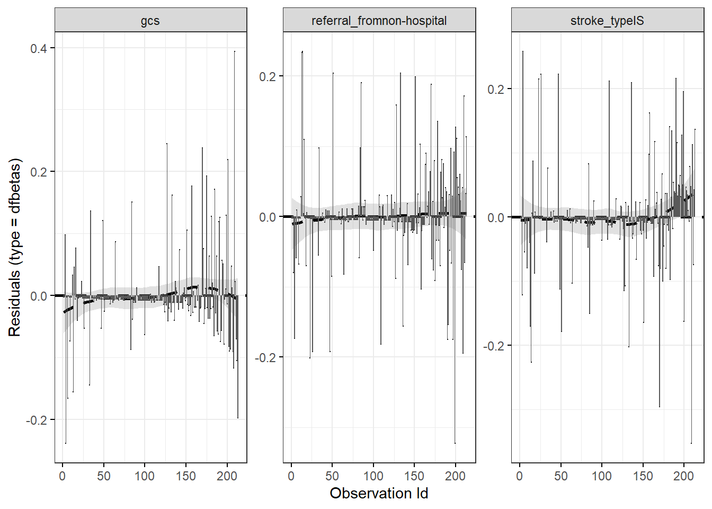
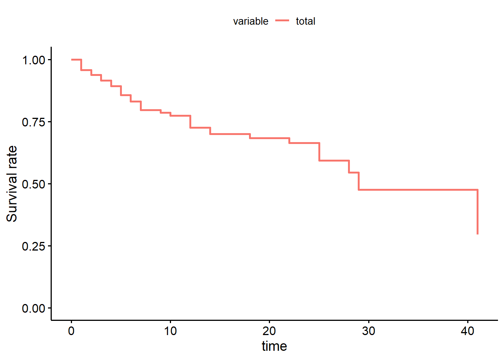

Chapter 11 Survival Analysis
11.1 Introduction
11.1.1 Background
Regression concerns the relationship between a response variable and one or more exploratory variables. The independent variables are also called covariates. Some common regression analysis in health and medicine is linear regression, logistic regression, Poisson regression and Cox proportional hazard regression. Linear regression falls under the general linear model while the other three regression models fall under the generalized linear regression.
Survival analysis is also known as duration analysis or time-to-event analysis. This analysis is useful in follow up studies where participants or patients are followed-up until they develop the event of interest. Examples of such studies include the retrospective cohort or prospective cohort studies.
Sometime people confuse and wrongly think that the survival analysis is only applicable to the study of survival (where the event of interest is either alive or death condition). It is not. Any study that involves both the duration of follow up (in days or weeks or months) and the event of interest can be considered as suitable for survival analysis. So, survival or duration analysis is performed on data that has duration until an event occurs.
In health and medicine studies, this event can be of interest, for example:
- relapse after treatment
- death after diagnosis
- recurrence of disease
- treatment success
And for variable time, it can be in any time form such as days, weeks, years or event minutes. If we combine them together (with the event of interest) then it can become:
- months to relapse
- years from diagnosis to death
- weeks before recurrence
- days taken from the start of treatment to treatment success
11.1.2 Types of survival analysis
There are three main types of survival analysis:
- the non-parametric survival analysis for example Kaplan-Meier estimates.
- the semi-parametric survival analysis for example Cox proportional hazard regression.
- the parametric survival analysis for example Weibull parametric survival analysis.
In medical literature, we usually perform the non-parametric analysis for example the Kaplan-Meier estimates at the beginning of the analysis to understand the trend of survival probabilities. Following that, we perform simple (univariable) or multiple (multivariable) Cox proportional hazard (PH) regression model. If we are sure with the distribution of the risk and aim to estimate the survival time, then we can perform parametric survival analysis.
11.1.3 Objectives
At the end of the chapter, the readers will be
- to perform Kaplan-Meier survival analysis
- to perform the simple (univariable) Cox PH regression analysis
- to perform the multiple (multivariable) Cox PH regression analysis
11.2 Prepare environment for analysis
11.2.1 RStudio project
We recommend your start a new analysis project by creating a new RStudio project. To do this:
- Go to File
- Click New Project
- Choose New Directory or Existing Directory.
This directory actually a folder that should contain the R codes, the dataset and the outputs from the analysis. To organize further, we would create a folder and name it as data in the directory. And we will copy the dataset stroke_data.csv in the data folder.
11.2.2 Packages
Next, we will load the necessary packages. We will use these packages:
- gtsummary: a package that give us a nice formatted tables of statistics
- tidyverse: a package for data wrangling and making plots
- lubridate : a package to manipulate dates
- survival: a package to run survival analysis.
- survminer: a package to plot survival objects
- broom: a package to make prettier outputs
- here : a package to manage location fo files
In addition to survival package, there are other packages that can perform survival analysis. The details of the package is available here https://cran.r-project.org/web/views/Survival.html.
Now, we will load the packages:
library(here)## here() starts at C:/Tengku/Sync_PC_Laptop/tulis-buku/multivariable-analysis/fork-profKIM/multivar_data_analysislibrary(tidyverse)## -- Attaching packages --------------------------------------- tidyverse 1.3.1 --## v ggplot2 3.3.5 v purrr 0.3.4
## v tibble 3.1.6 v dplyr 1.0.7
## v tidyr 1.1.4 v stringr 1.4.0
## v readr 2.1.1 v forcats 0.5.1## Warning: package 'tibble' was built under R version 4.1.2## -- Conflicts ------------------------------------------ tidyverse_conflicts() --
## x dplyr::filter() masks stats::filter()
## x dplyr::lag() masks stats::lag()library(lubridate)##
## Attaching package: 'lubridate'## The following objects are masked from 'package:base':
##
## date, intersect, setdiff, unionlibrary(survival)
library(survminer)## Warning: package 'survminer' was built under R version 4.1.2## Loading required package: ggpubrlibrary(broom)
library(gtsummary)Remember, check if all packages are available in your R library. If not, you will receive an error message stating that the package is not available. To install the package, use the install.packages() function. It will download and install the packages to your R libraries. Once the packages are installed, load the packages again using the library() function.
11.3 Data
The tutorial uses a dataset named stroke_data.csv. This is comma-separated value dataset. Now let us load the data
stroke <- read_csv(here('data', 'stroke_data.csv'))## Rows: 213 Columns: 12## -- Column specification --------------------------------------------------------
## Delimiter: ","
## chr (7): doa, dod, status, sex, dm, stroke_type, referral_from
## dbl (5): gcs, sbp, dbp, wbc, time2##
## i Use `spec()` to retrieve the full column specification for this data.
## i Specify the column types or set `show_col_types = FALSE` to quiet this message.And take a peek at our data to check
- number of observations (n=213)
- name of variables (12 variables)
- type of variables (character and double)
glimpse(stroke)## Rows: 213
## Columns: 12
## $ doa <chr> "17/2/2011", "20/3/2011", "9/4/2011", "12/4/2011", "12/4~
## $ dod <chr> "18/2/2011", "21/3/2011", "10/4/2011", "13/4/2011", "13/~
## $ status <chr> "alive", "alive", "dead", "dead", "alive", "dead", "aliv~
## $ sex <chr> "male", "male", "female", "male", "female", "female", "m~
## $ dm <chr> "no", "no", "no", "no", "yes", "no", "no", "yes", "yes",~
## $ gcs <dbl> 15, 15, 11, 3, 15, 3, 11, 15, 6, 15, 15, 4, 4, 10, 12, 1~
## $ sbp <dbl> 151, 196, 126, 170, 103, 91, 171, 106, 170, 123, 144, 23~
## $ dbp <dbl> 73, 123, 78, 103, 62, 55, 80, 67, 90, 83, 89, 120, 120, ~
## $ wbc <dbl> 12.5, 8.1, 15.3, 13.9, 14.7, 14.2, 8.7, 5.5, 10.5, 7.2, ~
## $ time2 <dbl> 1, 1, 1, 1, 1, 1, 1, 1, 1, 1, 1, 1, 1, 1, 1, 1, 1, 1, 1,~
## $ stroke_type <chr> "IS", "IS", "HS", "IS", "IS", "HS", "IS", "IS", "HS", "I~
## $ referral_from <chr> "non-hospital", "non-hospital", "hospital", "hospital", ~These data come from patients who were admitted at a tertiary hospital due to acute stroke. They were treated in the ward and the status (dead or alive) were recorded. The variables are:
- doa : date of admission
- dod : date of discharge
- status : event at discharge (alive or dead)
- sex : male or female
- dm : diabetes (yes or no)
- gcs : Glasgow Coma Scale (value from 3 to 15)
- sbp : Systolic blood pressure (mmHg)
- dbp : Diastolic blood pressure (mmHg)
- wbc : Total white cell count
- time2 : days in ward
- stroke_type : stroke type (Ischaemic stroke or Haemorrhagic stroke)
- referral_from : patient was referred from a hospital or not from a hospital
The outcome of interest is time from admission to death. The time variable is time2 (in days) and the event variable is status. The event of interest is dead. We also note that variables dates and other categorical variables are in character format. The rest are in numerical format.
11.4 Exploratory data
We will convert the variables doa and doa to a more valid format that is date:
stroke <-
stroke %>%
mutate(doa = dmy(doa),
dod = dmy(dod))We will perform a quick preliminary analysis. First, by looking at the summary statistics:
summary(stroke)## doa dod status
## Min. :2011-01-01 Min. :2011-01-05 Length:213
## 1st Qu.:2011-06-06 1st Qu.:2011-06-09 Class :character
## Median :2011-10-31 Median :2011-11-02 Mode :character
## Mean :2011-10-16 Mean :2011-10-23
## 3rd Qu.:2012-03-12 3rd Qu.:2012-03-18
## Max. :2012-06-23 Max. :2012-06-27
## sex dm gcs sbp
## Length:213 Length:213 Min. : 3.00 Min. : 75.0
## Class :character Class :character 1st Qu.:10.00 1st Qu.:142.0
## Mode :character Mode :character Median :15.00 Median :160.0
## Mean :12.52 Mean :162.8
## 3rd Qu.:15.00 3rd Qu.:186.0
## Max. :15.00 Max. :290.0
## dbp wbc time2 stroke_type
## Min. : 42.00 Min. : 4.2 Min. : 1.000 Length:213
## 1st Qu.: 79.00 1st Qu.: 7.5 1st Qu.: 3.000 Class :character
## Median : 90.00 Median : 9.9 Median : 4.000 Mode :character
## Mean : 91.53 Mean :10.4 Mean : 6.474
## 3rd Qu.:103.00 3rd Qu.:12.5 3rd Qu.: 7.000
## Max. :160.00 Max. :27.0 Max. :43.000
## referral_from
## Length:213
## Class :character
## Mode :character
##
##
## The tbl_summary() function from gtsummary package can produce nice tables. For example, the overall characteristics of patients can be obtained by:
stroke %>%
tbl_summary()| Characteristic | N = 2131 |
|---|---|
| doa | 2011-01-01 to 2012-06-23 |
| dod | 2011-01-05 to 2012-06-27 |
| status | |
| alive | 165 (77%) |
| dead | 48 (23%) |
| sex | |
| female | 122 (57%) |
| male | 91 (43%) |
| dm | 72 (34%) |
| gcs | 15.0 (10.0, 15.0) |
| sbp | 160 (142, 186) |
| dbp | 90 (79, 103) |
| wbc | 9.9 (7.5, 12.5) |
| time2 | 4 (3, 7) |
| stroke_type | |
| HS | 69 (32%) |
| IS | 144 (68%) |
| referral_from | |
| hospital | 80 (38%) |
| non-hospital | 133 (62%) |
|
1
Range; n (%); Median (IQR)
|
|
To obtain the patients characteristics based on status:
stroke %>%
tbl_summary(by = status)| Characteristic | alive, N = 1651 | dead, N = 481 |
|---|---|---|
| doa | 2011-01-03 to 2012-06-22 | 2011-01-01 to 2012-06-23 |
| dod | 2011-01-06 to 2012-06-27 | 2011-01-05 to 2012-06-26 |
| sex | ||
| female | 87 (53%) | 35 (73%) |
| male | 78 (47%) | 13 (27%) |
| dm | 59 (36%) | 13 (27%) |
| gcs | 15.0 (14.0, 15.0) | 8.5 (5.0, 11.2) |
| sbp | 160 (143, 186) | 162 (137, 192) |
| dbp | 90 (79, 102) | 90 (80, 109) |
| wbc | 9.0 (7.2, 11.6) | 11.4 (10.0, 14.5) |
| time2 | 4 (3, 6) | 5 (2, 12) |
| stroke_type | ||
| HS | 38 (23%) | 31 (65%) |
| IS | 127 (77%) | 17 (35%) |
| referral_from | ||
| hospital | 51 (31%) | 29 (60%) |
| non-hospital | 114 (69%) | 19 (40%) |
|
1
Range; n (%); Median (IQR)
|
||
To obtain the patients characteristics based on stroke types:
stroke %>%
tbl_summary(by = stroke_type)| Characteristic | HS, N = 691 | IS, N = 1441 |
|---|---|---|
| doa | 2011-01-06 to 2012-06-23 | 2011-01-01 to 2012-06-16 |
| dod | 2011-01-22 to 2012-06-26 | 2011-01-05 to 2012-06-27 |
| status | ||
| alive | 38 (55%) | 127 (88%) |
| dead | 31 (45%) | 17 (12%) |
| sex | ||
| female | 43 (62%) | 79 (55%) |
| male | 26 (38%) | 65 (45%) |
| dm | 19 (28%) | 53 (37%) |
| gcs | 11.0 (6.0, 14.0) | 15.0 (13.8, 15.0) |
| sbp | 152 (139, 187) | 161 (143, 186) |
| dbp | 90 (80, 102) | 91 (79, 103) |
| wbc | 11.4 (9.4, 14.9) | 8.8 (7.2, 11.1) |
| time2 | 6 (4, 15) | 4 (3, 5) |
| referral_from | ||
| hospital | 46 (67%) | 34 (24%) |
| non-hospital | 23 (33%) | 110 (76%) |
|
1
Range; n (%); Median (IQR)
|
||
11.5 Kaplan-Meier survival estimates
Kaplan-Meier survival estimates is the non-parametric survival estimates. It provides the survival probability estimates at different time. Using survfit(), we can estimate the survival probability based on Kaplan-Meier (KM).
Let’s estimate the survival probabilities for
- overall
- stroke types
The survival probabilities for all patients:
KM <- survfit(Surv(time = time2,
event = status == "dead" ) ~ 1,
data = stroke)
summary(KM)## Call: survfit(formula = Surv(time = time2, event = status == "dead") ~
## 1, data = stroke)
##
## time n.risk n.event survival std.err lower 95% CI upper 95% CI
## 1 213 9 0.958 0.0138 0.9311 0.985
## 2 190 4 0.938 0.0168 0.9053 0.971
## 3 166 4 0.915 0.0198 0.8770 0.955
## 4 130 4 0.887 0.0237 0.8416 0.934
## 5 90 5 0.838 0.0310 0.7790 0.901
## 6 65 3 0.799 0.0367 0.7301 0.874
## 7 56 4 0.742 0.0438 0.6608 0.833
## 9 42 1 0.724 0.0462 0.6391 0.821
## 10 37 1 0.705 0.0489 0.6150 0.807
## 12 33 4 0.619 0.0587 0.5142 0.746
## 14 24 2 0.568 0.0642 0.4548 0.708
## 18 19 1 0.538 0.0674 0.4206 0.687
## 22 15 1 0.502 0.0718 0.3792 0.664
## 25 9 2 0.390 0.0892 0.2494 0.611
## 28 5 1 0.312 0.0998 0.1669 0.584
## 29 4 1 0.234 0.1009 0.1007 0.545
## 41 2 1 0.117 0.0970 0.0231 0.593Next, we will estimate the survival probabilities for stroke type:
KM_str_type2 <- survfit(Surv(time = time2,
event = status == "dead" ) ~ stroke_type,
data = stroke)
summary(KM_str_type2)## Call: survfit(formula = Surv(time = time2, event = status == "dead") ~
## stroke_type, data = stroke)
##
## stroke_type=HS
## time n.risk n.event survival std.err lower 95% CI upper 95% CI
## 1 69 6 0.913 0.0339 0.8489 0.982
## 2 61 1 0.898 0.0365 0.8293 0.973
## 3 58 4 0.836 0.0453 0.7520 0.930
## 4 52 2 0.804 0.0489 0.7136 0.906
## 5 47 4 0.736 0.0554 0.6346 0.853
## 6 38 2 0.697 0.0589 0.5905 0.822
## 7 34 2 0.656 0.0621 0.5447 0.790
## 9 30 1 0.634 0.0638 0.5205 0.772
## 10 27 1 0.611 0.0656 0.4945 0.754
## 12 24 2 0.560 0.0693 0.4390 0.713
## 14 19 1 0.530 0.0717 0.4068 0.691
## 18 15 1 0.495 0.0751 0.3675 0.666
## 22 11 1 0.450 0.0806 0.3166 0.639
## 25 6 2 0.300 0.1019 0.1541 0.584
## 29 2 1 0.150 0.1176 0.0322 0.698
##
## stroke_type=IS
## time n.risk n.event survival std.err lower 95% CI upper 95% CI
## 1 144 3 0.979 0.0119 0.956 1.000
## 2 129 3 0.956 0.0174 0.923 0.991
## 4 78 2 0.932 0.0241 0.886 0.980
## 5 43 1 0.910 0.0318 0.850 0.975
## 6 27 1 0.876 0.0451 0.792 0.970
## 7 22 2 0.797 0.0676 0.675 0.941
## 12 9 2 0.620 0.1223 0.421 0.912
## 14 5 1 0.496 0.1479 0.276 0.890
## 28 3 1 0.331 0.1671 0.123 0.890
## 41 1 1 0.000 NaN NA NA11.6 Plot the survival probability
The KM estimate provides the survival probabilites. We can plot these probabilities to look at the trend of survival over time. The plot provides
- survival probability on the y-axis
- time on the x-axis
ggsurvplot(KM_str_type2,
data = stroke,
risk.table = TRUE,
linetype = c(1,4),
tables.height = 0.3,
pval = TRUE)
We can perform the Kaplan-Meier estimates for variable dm too:
KM_dm <- survfit(Surv(time = time2,
event = status == "dead" ) ~ dm,
data = stroke)
summary(KM_dm)## Call: survfit(formula = Surv(time = time2, event = status == "dead") ~
## dm, data = stroke)
##
## dm=no
## time n.risk n.event survival std.err lower 95% CI upper 95% CI
## 1 141 8 0.943 0.0195 0.9058 0.982
## 2 122 4 0.912 0.0242 0.8661 0.961
## 3 102 2 0.894 0.0268 0.8434 0.949
## 4 82 2 0.873 0.0303 0.8152 0.934
## 5 54 5 0.792 0.0441 0.7100 0.883
## 6 40 3 0.732 0.0524 0.6366 0.843
## 7 34 2 0.689 0.0575 0.5854 0.812
## 10 24 1 0.661 0.0619 0.5498 0.794
## 12 20 4 0.529 0.0771 0.3971 0.703
## 18 13 1 0.488 0.0812 0.3521 0.676
## 22 9 1 0.434 0.0884 0.2908 0.647
## 25 4 1 0.325 0.1149 0.1627 0.650
## 29 3 1 0.217 0.1171 0.0752 0.625
##
## dm=yes
## time n.risk n.event survival std.err lower 95% CI upper 95% CI
## 1 72 1 0.986 0.0138 0.9594 1.000
## 3 64 2 0.955 0.0253 0.9070 1.000
## 4 48 2 0.915 0.0367 0.8463 0.990
## 7 22 2 0.832 0.0653 0.7137 0.971
## 9 15 1 0.777 0.0811 0.6330 0.953
## 14 9 2 0.604 0.1248 0.4030 0.906
## 25 5 1 0.483 0.1471 0.2662 0.878
## 28 2 1 0.242 0.1860 0.0534 1.000
## 41 1 1 0.000 NaN NA NAAnd then we can plot the survival estimates for patients with and without diabetes:
ggsurvplot(KM_dm,
data = stroke,
risk.table = TRUE,
linetype = c(1,4),
tables.height = 0.3,
pval = TRUE)
11.7 Comparing Kaplan-Meier estimates across groups
There are a number of available tests to compare the survival estimates between groups based on KM. The tests include:
- log-rank test (default)
- peto-peto test
11.7.1 Log-rank test
From Kaplan-Meier survival curves, we could see the graphical representation of survival probabilities in different group over time. And to answer question if the survival estimates are different between levels or groups we can use statistical tests for example the log rank and the peto-peto tests.
For all the test, the null hypothesis is that that the survival estimates between levels or groups are not different. For example, to do that:
survdiff(Surv(time = time2,
event = status == "dead") ~ stroke_type,
data = stroke,
rho = 0)## Call:
## survdiff(formula = Surv(time = time2, event = status == "dead") ~
## stroke_type, data = stroke, rho = 0)
##
## N Observed Expected (O-E)^2/E (O-E)^2/V
## stroke_type=HS 69 31 24.2 1.92 4.51
## stroke_type=IS 144 17 23.8 1.95 4.51
##
## Chisq= 4.5 on 1 degrees of freedom, p= 0.03The survival estimates between the stroke types (IS vs HS groups) are different at the level of \(5\%\) significance (p = 0.03).
And for the survival estimates based on diabetes status:
survdiff(Surv(time = time2,
event = status == "dead") ~ dm,
data = stroke,
rho = 0)## Call:
## survdiff(formula = Surv(time = time2, event = status == "dead") ~
## dm, data = stroke, rho = 0)
##
## N Observed Expected (O-E)^2/E (O-E)^2/V
## dm=no 141 35 29.8 0.919 2.54
## dm=yes 72 13 18.2 1.500 2.54
##
## Chisq= 2.5 on 1 degrees of freedom, p= 0.1The survival estimates between patients with and without diabetes (dm status yes vs no groups) are not different (p = 0.1).
11.7.2 peto-peto test
We will be confident with our results if we obtain almost similar findings from other tests. So, now let’s compare survival estimates using the peto-peto test.
This is the result for comparing survival estimates for stroke type using peto-peto test.
survdiff(Surv(time = time2,
event = status == "dead") ~ stroke_type,
data = stroke,
rho = 1)## Call:
## survdiff(formula = Surv(time = time2, event = status == "dead") ~
## stroke_type, data = stroke, rho = 1)
##
## N Observed Expected (O-E)^2/E (O-E)^2/V
## stroke_type=HS 69 25.3 18.7 2.33 6.02
## stroke_type=IS 144 13.7 20.3 2.15 6.02
##
## Chisq= 6 on 1 degrees of freedom, p= 0.01This is the result for comparing survival estimates for diabetes status using peto-peto test.
survdiff(Surv(time = time2,
event = status == "dead") ~ dm,
data = stroke,
rho = 1)## Call:
## survdiff(formula = Surv(time = time2, event = status == "dead") ~
## dm, data = stroke, rho = 1)
##
## N Observed Expected (O-E)^2/E (O-E)^2/V
## dm=no 141 29.54 24.3 1.11 3.61
## dm=yes 72 9.41 14.6 1.85 3.61
##
## Chisq= 3.6 on 1 degrees of freedom, p= 0.0611.8 Semi-parametric models in survival analysis
One advantage of time-to-event data (from a cohort study) is the ability to estimate the hazard or risk to develop the event (outcome) of interest. However, the challenge in the cohort study is the presence of censoring. Censoring can happen due to
- patients leave the study (loss to follow up) randomly
- patients do not experience the event even at the termination of the study
- patients are withdrawn from the study
In censored patients, we do not know exactly the time for them to develop the event.
To explore how to incorporate a regression model-like structure into the hazard function, we can model the hazard function using:
\[h(t) = \theta_0\] The hazard function is a rate, and because of that it must be strictly positive. To constrain \(\theta\) at greater than zero, we can parameterize the hazard function as:
\[h(t) = \exp^{\beta_0}\]
So for a covariate \(x\) the log-hazard function is:
\[ln[h(t.x)] = \beta_0 + \beta_1(x)\] and the hazard function is
\[h(t.x) = exp^{\beta_0 + \beta_1(x)}\]
This is the exponential distribution which is one example of a fully parametric hazard function. Fully parametric models accomplishes two goals simultaneously:
- It describes the basic underlying distribution of survival time (error component)
- It characterizes how that distribution changes as a function of the covariates (systematic component).
However, even though fully parametric models can be used to accomplish the above goals, the assumptions required for their error components may be unnecessarily stringent or unrealistic. One option is to have a fully parametric regression structure but leave their dependence on time unspecified. The models that utilize this approach are called semiparametric regression models.
11.8.1 Cox proportional hazard regression
If we take our dataset for example, where want to compare the survival experience of stroke patients on different types of stroke (Ischaemic stroke vs Haemorrhagic stroke), one form of a regression model for the hazard function that addresses the study goal is:
\[h(t,x,\beta) = h_0(t)r(x,\beta)\] We can see that the hazard function is the product of two functions:
- The function, \(h_0(t)\), characterizes how the hazard function changes as a function of survival time.
- The function, \(r(x,\beta)\), characterizes how the hazard function changes as a function of subject covariates.
The \(h_0(t)\) is frequently referred to as the baseline hazard function. Thus the baseline hazard function is, in some sense, a generalization of the intercept or constant term found in parametric regression models.
The hazard ratio (HR) depends only on the function \(r(x,\beta)\). If the ratio function \(HR(t,x_1,x_0)\) has a clear clinical interpretation then, the actual form of the baseline hazard function is of little importance.
With this parameterization the hazard function is
\[h(t,x,\beta) = h_o(t)exp^{x \beta}\]
and the hazard ratio is
\[HR(t,x_1, x_0) = exp^{\beta(x_1 - x_0)}\]
This model is referred to in the literature by a variety of terms, such as the Cox model, the Cox proportional hazards model or simply the proportional hazards model.
So for example, if we have a covariate which is a dichomotomous (binary), such as stroke type: coded as a value of \(x_1 = 1\) and \(x_0 = 0\), for HS and IS, respectively, then the hazard ratio becomes
\[HR(t,x_1, x_0) = exp^\beta\] If the value of the coefficient is \(\beta = ln(2)\), then the interpretation is that HS are dying at twice \((exp^\beta = 2)\) the rate of patients with IS.
11.8.2 Advantages of the Cox proportional hazard regression
If you remember that by using Kaplan-Meier (KM) analysis, we could estimate the survival probability. And using the log-rank or peto-peto test, we could compare the survival between categorical covariates. However, the disadvantages of KM include:
- Need to categorize numerical variable to compare survival
- It is a univariable analysis
- It is a non-parametric analysis
We also acknowledge that the fully parametric regression models in survival analysis have stringent assumptions and distribution requirement. So, to overcome the limitations of the KM analysis and the fully parametric analysis, we can model our survival data using the semi-parametric Cox proportional hazard regression.
11.9 Estimation from Cox proportional hazards regression
11.9.1 Simple Cox PH regression
Using our stroke dataset, we will estimate the parameters using the Cox PH regression. Remember, in our data we have
- the time variable :
time2 - the event variable :
statusand the event of interest is dead. Event classified other than dead are considered as censored. - date variables : date of admission (doa) and date of discharge (dod)
- all other covariates
Now let’s take stroke type as the covariate of interest:
stroke_stype <-
coxph(Surv(time = time2,
event = status == 'dead') ~ stroke_type,
data = stroke)
summary(stroke_stype)## Call:
## coxph(formula = Surv(time = time2, event = status == "dead") ~
## stroke_type, data = stroke)
##
## n= 213, number of events= 48
##
## coef exp(coef) se(coef) z Pr(>|z|)
## stroke_typeIS -0.6622 0.5157 0.3172 -2.088 0.0368 *
## ---
## Signif. codes: 0 '***' 0.001 '**' 0.01 '*' 0.05 '.' 0.1 ' ' 1
##
## exp(coef) exp(-coef) lower .95 upper .95
## stroke_typeIS 0.5157 1.939 0.277 0.9602
##
## Concordance= 0.623 (se = 0.045 )
## Likelihood ratio test= 4.52 on 1 df, p=0.03
## Wald test = 4.36 on 1 df, p=0.04
## Score (logrank) test = 4.48 on 1 df, p=0.03But for nicer output (in a data frame format), we can use tidy(). This will give us
- the estimate which is the log hazard. If you exponentiate it, you will get hazard ratio
- the standard error
- the p-value
- the confidence intervals for the log hazard
tidy(stroke_stype,
conf.int = TRUE)## # A tibble: 1 x 7
## term estimate std.error statistic p.value conf.low conf.high
## <chr> <dbl> <dbl> <dbl> <dbl> <dbl> <dbl>
## 1 stroke_typeIS -0.662 0.317 -2.09 0.0368 -1.28 -0.0406The simple Cox PH model with covariate stroke type shows that the patients with IS has \(-0.0662\) times the crude log hazard for death as compared to patients with HS (p-value = 0.0368).
The \(95\%\) confidence intervals for the crude log hazards are calculated by:
\[\hat\beta \pm 1.96 \times \widehat{SE}(\hat\beta)\]
\[-0.662 \pm 1.96 \times 0.317 = -1.284 , -0.041\]
tidy(stroke_stype,
exponentiate = TRUE,
conf.int = TRUE)## # A tibble: 1 x 7
## term estimate std.error statistic p.value conf.low conf.high
## <chr> <dbl> <dbl> <dbl> <dbl> <dbl> <dbl>
## 1 stroke_typeIS 0.516 0.317 -2.09 0.0368 0.277 0.960Or we can get the crude hazard ratio (HR) by exponentiating the log HR. In this example, the simple Cox PH model with covariate stroke type shows that the patients with IS has \(49\%\) lower risk for stroke death as compared to patients with HS (p-value = 0.0368 and \(95\% CI 0.277, 0.960\)).
The \(95\%\) confidence intervals for crude HR are calculated by
\[exp[\hat\beta \pm 1.96 \times \widehat{SE}(\hat\beta)]\]
Hence, the lower bound for crude HR is \(exp(-1.284)= 0.277\) and the upper bound for crude HR is \(exp(-0.0041) = 0.996\) at \(95\%\) confidence.
Let’s model the risk for stroke death for covariate gcs:
stroke_gcs <-
coxph(Surv(time = time2,
event = status == 'dead') ~ gcs,
data = stroke)
summary(stroke_gcs)## Call:
## coxph(formula = Surv(time = time2, event = status == "dead") ~
## gcs, data = stroke)
##
## n= 213, number of events= 48
##
## coef exp(coef) se(coef) z Pr(>|z|)
## gcs -0.17454 0.83984 0.03431 -5.087 3.63e-07 ***
## ---
## Signif. codes: 0 '***' 0.001 '**' 0.01 '*' 0.05 '.' 0.1 ' ' 1
##
## exp(coef) exp(-coef) lower .95 upper .95
## gcs 0.8398 1.191 0.7852 0.8983
##
## Concordance= 0.763 (se = 0.039 )
## Likelihood ratio test= 26.01 on 1 df, p=3e-07
## Wald test = 25.88 on 1 df, p=4e-07
## Score (logrank) test = 29.33 on 1 df, p=6e-08The simple Cox PH model with covariate gcs shows that with each one unit increase in gcs, the crude log hazard for death changes by a factor of \(-0.175\).
tidy(stroke_gcs,
exponentiate = TRUE,
conf.int = TRUE)## # A tibble: 1 x 7
## term estimate std.error statistic p.value conf.low conf.high
## <chr> <dbl> <dbl> <dbl> <dbl> <dbl> <dbl>
## 1 gcs 0.840 0.0343 -5.09 0.000000363 0.785 0.898When we exponentiate the log HR, the simple Cox PH model shows that with each one unit increase in gcs, the crude risk for death decreases for about \(16\%\) and the of decrease are between \(95\% CI (0.785, 0.898)\). The relationship between stroke death and gcs is highly significant (p-value \(< 0.0001\)) when not adjusting for other covariates.
By using tbl_uvregression() we can generate simple univariable model for all covariates in one line of code. In return, we get the crude HR for all the covariates of interest.
stroke %>%
dplyr::select(time2, status, sex, dm, gcs, sbp, dbp, wbc, stroke_type, referral_from) %>%
tbl_uvregression(
method = coxph,
y = Surv(time2, event = status == 'dead'),
exponentiate = TRUE,
pvalue_fun = ~style_pvalue(.x, digits = 3)
) | Characteristic | N | HR1 | 95% CI1 | p-value |
|---|---|---|---|---|
| sex | 213 | |||
| female | — | — | ||
| male | 0.71 | 0.37, 1.36 | 0.299 | |
| dm | 213 | |||
| no | — | — | ||
| yes | 0.60 | 0.31, 1.13 | 0.112 | |
| gcs | 213 | 0.84 | 0.79, 0.90 | <0.001 |
| sbp | 213 | 1.00 | 0.99, 1.01 | 0.617 |
| dbp | 213 | 1.00 | 0.98, 1.01 | 0.772 |
| wbc | 213 | 1.04 | 0.97, 1.11 | 0.270 |
| stroke_type | 213 | |||
| HS | — | — | ||
| IS | 0.52 | 0.28, 0.96 | 0.037 | |
| referral_from | 213 | |||
| hospital | — | — | ||
| non-hospital | 0.58 | 0.32, 1.05 | 0.074 | |
|
1
HR = Hazard Ratio, CI = Confidence Interval
|
||||
11.9.2 Multiple Cox PH regression
There are two primary reasons to include more than one covariates in the model. One of the primary reasons for using a regression model is to include multiple covariates to adjust statistically for possible imbalances in the observed data before making statistical inferences. In traditional statistical applications, it is called analysis of covariance, while in clinical and epidemiological investigations it is often called control of confounding. The other reason is a statistically related issue where the inclusion of higher-order terms in a model representing interactions between covariates. These are also called effect modifiers.
Let’s decide based on our clinical expertise and statistical significance, we would model a Cox PH model with these covariates.
- stroke_type
- gcs
- referral_from
The reasons because we found that both gcs and stroke type are statistically significant. We also believe that the way patients are referred to hospital may indicate the severity of stroke. On the other hand, we assumed variables sex, sbp, dbp and wbc are not clinically important risk factors for stroke death.
In addition to that, we foresee that stroke type and death is mediated through gcs. For example, patients that suffer from haemorrhagic stroke will suffer more severe bleeding. This will lead to poorer gcs and pooer survival status. So, by adding both gcs and stroke, we can estimate the total effect from stroke type to death and the effect mediated through gcs.
To estimate to Cox PH model with stroke_type, gcs and referral_from:
stroke_mv <-
coxph(Surv(time = time2,
event = status == 'dead') ~ stroke_type + gcs + referral_from,
data = stroke)
tidy(stroke_mv, exponentiate = TRUE, conf.int = TRUE)## # A tibble: 3 x 7
## term estimate std.error statistic p.value conf.low conf.high
## <chr> <dbl> <dbl> <dbl> <dbl> <dbl> <dbl>
## 1 stroke_typeIS 0.835 0.345 -0.523 6.01e-1 0.424 1.64
## 2 gcs 0.847 0.0358 -4.63 3.72e-6 0.790 0.909
## 3 referral_fromnon-ho~ 0.824 0.322 -0.602 5.47e-1 0.439 1.55We would like to doubly confirm if the model with covariates stroke_type, gcs and referral_from and really statistically different from model with stroke type and referral from:
stroke_mv2 <-
coxph(Surv(time = time2,
event = status == 'dead') ~ stroke_type + referral_from,
data = stroke)
tidy(stroke_mv, exponentiate = TRUE, conf.int = TRUE)## # A tibble: 3 x 7
## term estimate std.error statistic p.value conf.low conf.high
## <chr> <dbl> <dbl> <dbl> <dbl> <dbl> <dbl>
## 1 stroke_typeIS 0.835 0.345 -0.523 6.01e-1 0.424 1.64
## 2 gcs 0.847 0.0358 -4.63 3.72e-6 0.790 0.909
## 3 referral_fromnon-ho~ 0.824 0.322 -0.602 5.47e-1 0.439 1.55We can confirm this by running the likelihood ratio test between the two Cox PH models:
anova(stroke_mv, stroke_mv2, test = 'Chisq')## Analysis of Deviance Table
## Cox model: response is Surv(time = time2, event = status == "dead")
## Model 1: ~ stroke_type + gcs + referral_from
## Model 2: ~ stroke_type + referral_from
## loglik Chisq Df P(>|Chi|)
## 1 -187.29
## 2 -198.08 21.57 1 3.412e-06 ***
## ---
## Signif. codes: 0 '***' 0.001 '**' 0.01 '*' 0.05 '.' 0.1 ' ' 1And true enough, the two Cox PH modes are different (p-value < 0.0001). And we will choose the larger model.
11.10 Inference
11.11 Adding interaction in the model
Interaction in the model is an interesting phenomenon. To illustrate how we manage interaction term, let’s start with a model with three covariates, gcs, stroke type and dm. In this model, based on clinical knowledge and curiosity, we would develop a two-way interaction term between gcs and stroke type. This interaction term (a product from gcs and stroke type) means the relationship between stroke type and risk for death is heterogenous in different values of gcs.
Let’s assign stroke type as \(st\) and code it as either 1 (HS) and 0 (IS)
\[g(t,st,gsc,dm,\beta) = ln[h_0(t) + st\beta_1 + gcs\beta_2 + (st \times gcs)\beta_3 + dm\beta_4]\] And the difference in the log hazard function becomes
\[[g(t,st = 1,gcs, dm,\beta) - g(t,st = 0,gcs, dm,\beta)]\] \[= ln[h_0(t) + 1beta_1 + gcs\beta_2 + (1gcs)\beta_3 + dm\beta_4] -\] \[ln[h_0(t) + 0beta_1 + gcs\beta_2 + (0gcs)\beta_3 + dm\beta_4]\] \[=beta_1 + gcs\beta_3\]
To run model with an interaction for Cox PH model, we can:
stroke_noia <-
coxph(Surv(time = time2,
event = status == 'dead') ~ stroke_type + gcs + dm,
data = stroke)
stroke_ia <-
coxph(Surv(time = time2,
event = status == 'dead') ~ stroke_type + gcs + stroke_type:gcs + dm,
data = stroke)
tidy(stroke_ia, exponentiate = TRUE, conf.int = TRUE)## # A tibble: 4 x 7
## term estimate std.error statistic p.value conf.low conf.high
## <chr> <dbl> <dbl> <dbl> <dbl> <dbl> <dbl>
## 1 stroke_typeIS 0.770 0.759 -0.345 0.730 0.174 3.41
## 2 gcs 0.839 0.0480 -3.67 0.000244 0.763 0.921
## 3 dmyes 0.653 0.342 -1.25 0.212 0.334 1.28
## 4 stroke_typeIS:gcs 1.01 0.0728 0.187 0.852 0.879 1.17It appears that the p-value for the interaction term (a product of gcs and stroke type) is large (p value = 0.852).
anova(stroke_ia, stroke_noia, test = 'Chisq')## Analysis of Deviance Table
## Cox model: response is Surv(time = time2, event = status == "dead")
## Model 1: ~ stroke_type + gcs + stroke_type:gcs + dm
## Model 2: ~ stroke_type + gcs + dm
## loglik Chisq Df P(>|Chi|)
## 1 -186.61
## 2 -186.63 0.0351 1 0.8514And when we run likelihood ratio test, we also observe the same result (p value = 0.851). And because of that, we decide not to add the interaction term in the model. However, it is also recommended to confirm this decision after discussion with subject matter expert, in this case, a stroke physician or neurosurgeon.
11.12 The proportional hazard assumption
11.12.1 Risk constant over time
The most important assumption in Cox PH regression is the proportionality of the hazards over time. It refers to the requirement that, the hazard functions are multiplicatively related and that their ratio is constant over survival time or it simply says that the estimated HR do not depend on time.
A check of the proportional hazards assumption can be done by looking at the parameter estimates \(\beta_1, ..., \beta_q\) over time. And we can safely assume proportional hazards when the estimates don’t vary much over time. In most settings, in order to test the PH assumption, we can employ two-step procedure for assessing:
- calculate covariate specific tests and
- plot the scaled and smoothed scaled Schoenfeld residuals obtained from the model.
11.12.2 Test for PH assumption
In many statistical software, the null hypothesis of constant regression coefficients can be tested, both globally as well as for each covariate. In R, this can be done using the cox.zph() function from the survival package.
stroke_zph <- cox.zph(stroke_mv, transform = 'km')
stroke_zph## chisq df p
## stroke_type 1.38336 1 0.24
## gcs 0.00764 1 0.93
## referral_from 1.39355 1 0.24
## GLOBAL 1.63410 3 0.65The global test is not significant (p value = 0.65)E and the p-value for each of the covariate is also larger than 0.05. These evidence support that the there risks are proportional over time.
stroke_zph_rank <- cox.zph(stroke_mv, transform = 'rank')
stroke_zph_rank## chisq df p
## stroke_type 1.29 1 0.26
## gcs 1.62 1 0.20
## referral_from 1.86 1 0.17
## GLOBAL 3.05 3 0.3811.12.3 Plots to assess PH assumption
We can plots these residuals
- deviance
- schoenfeld
- scaled schoenfeld
For example, let’s start with plotting the residuals
ggcoxdiagnostics(stroke_mv, type = "deviance")## `geom_smooth()` using formula 'y ~ x'
Now, we will use schoenfeld
ggcoxdiagnostics(stroke_mv, type = "schoenfeld")## `geom_smooth()` using formula 'y ~ x'
ggcoxdiagnostics(stroke_mv, type = "deviance", ox.scale = 'time')## Warning in ggcoxdiagnostics(stroke_mv, type = "deviance", ox.scale = "time"):
## ox.scale='time' works only with type=schoenfeld/scaledsch## `geom_smooth()` using formula 'y ~ x'
ggcoxdiagnostics(stroke_mv, type = "deviance", ox.scale = "linear.predictions")## `geom_smooth()` using formula 'y ~ x'
ggcoxdiagnostics(stroke_mv, type = "schoenfeld", ox.scale = "observation.id")## `geom_smooth()` using formula 'y ~ x'You may refer to this link for more details http://pdf.medrang.co.kr/CSAM/2017/024/csam-24-583_suppl.pdf
plot(stroke_zph, var = "stroke_type")
- for gcs
plot(stroke_zph, var = "gcs")
The plot for gcs shows possible violation of PH assumption. Even though, the coxzph() shows p value of larger than 0.05, there is a possibility that due to small sample size in the data, the PH test lost its power. However we believe that the violation is not severe.
- for referral type
plot(stroke_zph, var = "referral_from")
In the case of serious violation of proportionality of hazard, we can remedy using
- stratified cox regression
- extended cox regression using time-varying dependent variable
- parametric survival analysis
11.13 Model checking
11.13.1 Prediction from Cox PH model
From the Cox PH model, we can predict
- the linear predictor
- the risk
- the expected number of events given the covariates and follow-up time
- The linear predictor
stroke_lp <- augment(stroke_mv, data = stroke)
stroke_lp %>%
dplyr::select(gcs, stroke_type, referral_from, .fitted:.resid) %>%
slice(1:10)## # A tibble: 10 x 6
## gcs stroke_type referral_from .fitted .se.fit .resid
## <dbl> <chr> <chr> <dbl> <dbl> <dbl>
## 1 15 IS non-hospital -0.785 0.365 -0.0192
## 2 15 IS non-hospital -0.785 0.365 -0.0192
## 3 11 HS hospital 0.252 0.0545 0.970
## 4 3 IS hospital 1.40 0.537 0.907
## 5 15 IS non-hospital -0.785 0.365 -0.0192
## 6 3 HS hospital 1.58 0.341 0.888
## 7 11 IS hospital 0.0716 0.361 -0.0453
## 8 15 IS non-hospital -0.785 0.365 -0.0192
## 9 6 HS hospital 1.08 0.234 0.932
## 10 15 IS non-hospital -0.785 0.365 -0.0192- The predicted risk which is the risk score \(exp(lp)\) (“risk”),
risks <-
augment(stroke_mv,
data = stroke,
type.predict = "risk")
risks %>%
dplyr::select(status, gcs, stroke_type, referral_from, .fitted:.resid) %>%
slice(1:10)## # A tibble: 10 x 7
## status gcs stroke_type referral_from .fitted .se.fit .resid
## <chr> <dbl> <chr> <chr> <dbl> <dbl> <dbl>
## 1 alive 15 IS non-hospital 0.456 0.247 -0.0192
## 2 alive 15 IS non-hospital 0.456 0.247 -0.0192
## 3 dead 11 HS hospital 1.29 0.0618 0.970
## 4 dead 3 IS hospital 4.05 1.08 0.907
## 5 alive 15 IS non-hospital 0.456 0.247 -0.0192
## 6 dead 3 HS hospital 4.85 0.751 0.888
## 7 alive 11 IS hospital 1.07 0.374 -0.0453
## 8 alive 15 IS non-hospital 0.456 0.247 -0.0192
## 9 dead 6 HS hospital 2.95 0.401 0.932
## 10 alive 15 IS non-hospital 0.456 0.247 -0.0192- The expected is the expected number of events given the covariates and follow-up time (“expected”). The survival probability for a subject is equal to \(exp(-expected)\).
expected <-
augment(stroke_mv,
data = stroke,
type.predict = "expected")
expected %>%
dplyr::select(status, gcs, stroke_type, referral_from, .fitted:.resid) %>%
mutate(surv_prob = exp(-(.fitted))) %>%
slice(1:10)## # A tibble: 10 x 8
## status gcs stroke_type referral_from .fitted .se.fit .resid surv_prob
## <chr> <dbl> <chr> <chr> <dbl> <dbl> <dbl> <dbl>
## 1 alive 15 IS non-hospital 0.0192 0.00801 -0.0192 0.981
## 2 alive 15 IS non-hospital 0.0192 0.00801 -0.0192 0.981
## 3 dead 11 HS hospital 0.0297 0.0209 0.970 0.971
## 4 dead 3 IS hospital 0.0933 0.0853 0.907 0.911
## 5 alive 15 IS non-hospital 0.0192 0.00801 -0.0192 0.981
## 6 dead 3 HS hospital 0.112 0.0850 0.888 0.894
## 7 alive 11 IS hospital 0.0453 0.0193 -0.0453 0.956
## 8 alive 15 IS non-hospital 0.0192 0.00801 -0.0192 0.981
## 9 dead 6 HS hospital 0.0680 0.0472 0.932 0.934
## 10 alive 15 IS non-hospital 0.0192 0.00801 -0.0192 0.981The Cox model is a relative risk model; predictions of type “linear predictor,” “risk,” and “terms” are all relative to the sample from which they came. By default, the reference value for each of these is the mean covariate within strata. Predictions of type “expected” incorporate the baseline hazard and are thus absolute instead of relative; the reference option has no effect on these.
11.13.2 Residuas from Cox PH model
Here, we will generate the
- martingale residuals
- deviance
- schoenfeld
- dfbeta
- scaled schoenfeld
rmartingale <- residuals(stroke_mv, 'martingale')
rdeviance <- residuals(stroke_mv, 'deviance')
rschoenfeld <- residuals(stroke_mv, 'schoenfeld')
rdfbeta <- residuals(stroke_mv, 'dfbeta')
rscaled_sch <- residuals(stroke_mv, 'scaledsch')11.13.3 Influential observations
We may check the \(dfbetas\) residual. This is residual that comes from a transformation of the score residual. It enables us to check the influence of dropping any single observation on parameter estimates. We may suspect influential observations when the \(dfbetas\) residuals greater than 1.
ggcoxdiagnostics(stroke_mv,
type = "dfbetas",
point.size = 0,
hline.col = "black",
sline.col = "black") + geom_bar(stat = "identity")## `geom_smooth()` using formula 'y ~ x'
11.14 Plot the adjusted survival
The function surv_adjustedcurves() calculates while the function ggadjustedcurves() plots adjusted survival curves for the coxph model. The main idea behind this function is to present expected survival curves calculated based on Cox model separately for subpopulations.
ggadjustedcurves(stroke_mv,
data = stroke)
11.15 Presentation and interpretation
The Cox PH model that we believe explains the risk for death among hospitalized acute stroke patients can be presented as below:
stroke_mv %>%
tbl_regression(
exponentiate = TRUE,
pvalue_fun = ~style_pvalue(.x, digits = 3)
) %>%
add_nevent(location = 'level') %>%
bold_p(t = 0.10) %>%
bold_labels()| Characteristic | Event N | HR1 | 95% CI1 | p-value |
|---|---|---|---|---|
| stroke_type | ||||
| HS | 31 | — | — | |
| IS | 17 | 0.83 | 0.42, 1.64 | 0.601 |
| gcs | 48 | 0.85 | 0.79, 0.91 | <0.001 |
| referral_from | ||||
| hospital | 29 | — | — | |
| non-hospital | 19 | 0.82 | 0.44, 1.55 | 0.547 |
|
1
HR = Hazard Ratio, CI = Confidence Interval
|
||||
11.16 References
For further understanding of the survival analysis concepts and application, excellent text include (Lemeshow_Stanley2008-03-07?)(survival-book?)